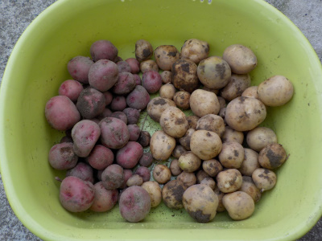
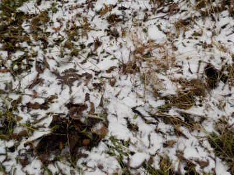
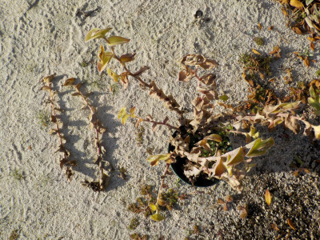

掘っていなかったじゃがいもを掘りました。
2022/12/31

翌年に持ち越さないようにじゃがいもを掘りました。
冬ですが、今日掘ったばっかりなので新じゃがです。小さいものを皮ごと料理してお正月に食べようと思います。
2022/12/31

翌年に持ち越さないようにじゃがいもを掘りました。
冬ですが、今日掘ったばっかりなので新じゃがです。小さいものを皮ごと料理してお正月に食べようと思います。
2021/12/18

土日になったらアレもしようコレもしようと考えていたんですが、寒くてやる気がなくなりました。
無理して体調を崩したくないので、野菜とみかんの収獲くらいしかしませんでした。
2021/12/04

茎が茶色っぽくなったなーと思っていたら、根元から折れだしました。
冬支度ですね。
過去の日記
畑仕事じゃないよ。